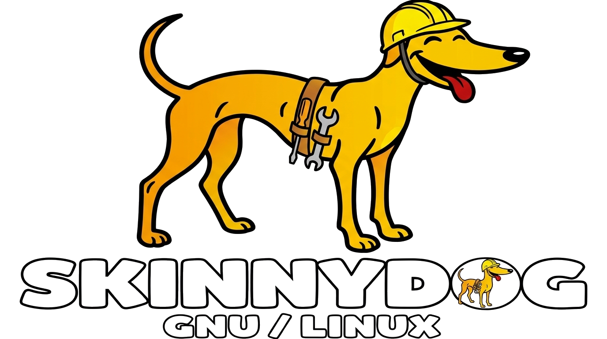

Спасательный Live-дистрибутив в оперативной памяти
На базе свежей Fedora. Загружается целиком в RAM, работает без флешки и заряжен инструментами для ремонта ПК, дисков и смартфонов.
Kernel 7.x / Latest
100% Live RAM
Xfce Desktop
Monthly Updates
RECOMMENDED
SkinnyDog Standard
Полная версия для любого современного и старого железа. Включает проприетарные драйверы и linux-firmware (Wi-Fi, GPU, NVMe) для мгновенного запуска из коробки.
- GParted, TestDisk, ddrescue, Clonezilla
- ADB, Fastboot, flashrom, chntpw
- Btrfs, NTFS, exFAT, LVM, LUKS
100% FREE SOFTWARE
SkinnyDog Libre
Редакция без проприетарных блобов и несвободной прошивки. Создана для сторонников философии GNU и максимально чистого свободного софта.
- Только свободные пакеты и драйверы
- Полный набор утилит спасения данных
- Загрузка в RAM (rd.live.ram=1)